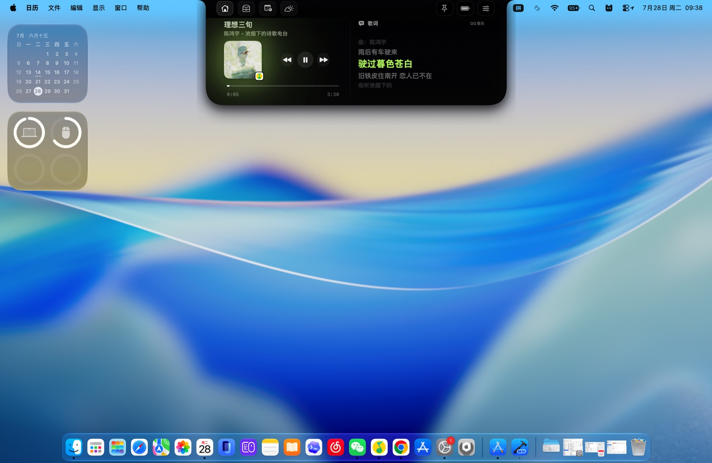
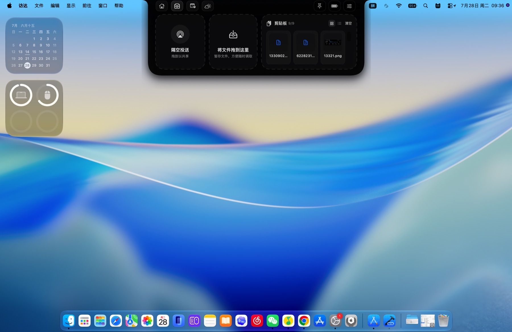
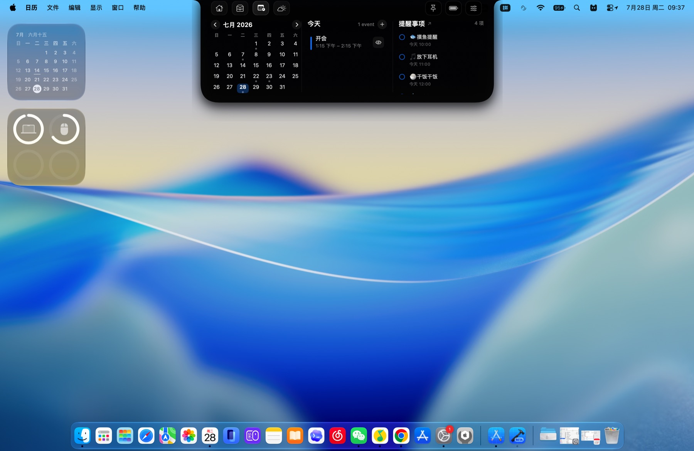

开周例会4:00 下午 – 6:00 下午
为 Mac 点亮一处灵动空间。
ChatNotch
小小刘海，大有可为。
音乐、天气、日程、提醒、暂存架与剪贴板，
常用功能，一抬眼就到。
支持 Apple 芯片与 Intel Mac
移动鼠标，让灯跟上你
CHATNOTCH IN MOTION · 动态演示
一抬眼，
所有重要信息都在。
它住在屏幕顶部，不打断正在进行的工作。需要时展开，完成后安静收起。
CHATNOTCH APPEARANCE · 外观预览
熟悉的刘海形态，
原样呈现在网页里。
按 ChatNotch 1.0.0 的三段尺寸、圆角、模块顺序和内容比例制作。悬停或点击仅用于查看外观变化，不连接系统功能。
仅作外观展示
ChatNotch 1.0 原版截图
200 × 36 · 408 × 88 · 658 × 180

ONE NOTCH, EVERYDAY TOOLS · 一个刘海，装下日常
不用打开更多窗口。
把高频能力放进统一、安静、随叫随到的顶部空间。
01
今天，
YOUR DAY, AT A GLANCE
今天，
从这里开始
音乐、月历、提醒、天气与设备状态集中在同一视线内，一次抬眼就能掌握。
- 多模块自由切换
- 实时天气与日程
- 设备状态一目了然
02
音乐与歌词，
MUSIC THAT STAYS WITH YOU
音乐与歌词，
同步流动
专辑封面、播放控制与歌词都停靠在刘海下方，不离开当前应用也能掌握节奏。
- 歌词与播放进度同步
- 常用控制触手可及
- 不遮挡当前工作窗口

03
文件暂存，
DROP IT. FIND IT. DONE.
文件暂存，
随手放下
隔空投送、文件暂存与剪贴板历史合在一处，拖入、取回都更快。
- 文件与图片拖入即存
- 剪贴板历史集中管理
- 跨应用取回更顺手

04
下一件事，
WHAT'S NEXT, RIGHT ON TIME
下一件事，
不再错过
日历与提醒事项并排呈现，今天的安排、时间和待办都在屏幕正上方。
- 月历与日程联动
- 提醒事项快速完成
- 当天信息自动聚合

LOCAL FIRST · 本地优先
效率可以聪明，
隐私不必妥协。
无需创建账号，不含广告，也不使用营销跟踪。暂存架与剪贴板内容默认保存在你的 Mac 本地。
查看完整隐私政策DOWNLOAD FOR MAC · 下载
让刘海，
开始替你工作。
ChatNotch 1.0 · 支持 Apple 芯片与 Intel Mac
建议使用 macOS 13 Ventura 或更高版本